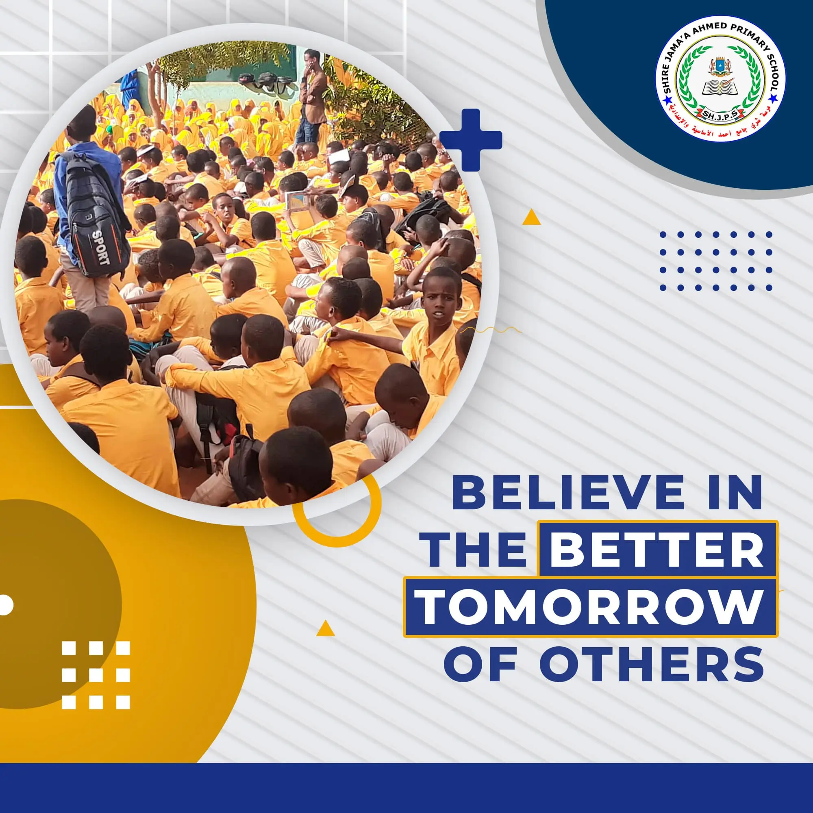
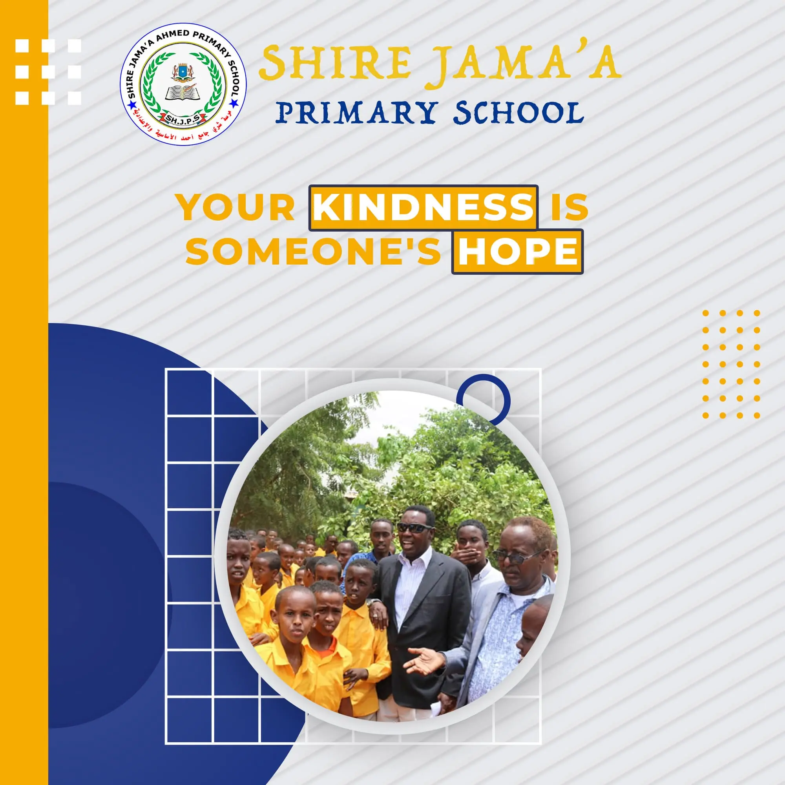

Nagu Saabsan
Shire Jaamac Axmed waa dugsi bulshadu leedahay oo bixiya waxbarashada aasaasiga ah ee ardada laga bilaabo fasallada 1-aad ilaa 12-aad oo ku salaysan manhajka qaranka Soomaaliyeed. Dugsiga waxaa la siiyay magaca nin caan ah oo aad loo ixtiraamo (Shire Jaamac Axmed) oo ahaa soo bandhigihii xarfaha Soomaaliga 1970 -yadii. Magaca ayaa loo doortay in lagu dhiirrigeliyo kor u qaadista akhriska iyo qoraalka ee bulshada iyo muhiimadda waxbarashada . Waxa uu ku yaala Degmada Caabudwaaq Gobolka Galgaduud Ee Soomaaliya. Dugsiga Shire Jaamac Axmed waa Dugsiga Kaalinta 1-aad kaga Jiro Galmudug, halka dhamaan iskuulada soomaaliya uu uga jiro kaalinta : 8-aad markii la eegayo qiimeyntii wasaaradda waxbarashada soomaailya ee sanadii 2021.
Sababihii Aas-aaska Dugsiga
Fikirka dugsigu wuxuu ka yimid hawl-wadeenno waxbarsho oo wax ka dhigayey qaar kamid ah dugsiyada deegaanka waxayna ahaayeen Axmed Jaamac Cabdille iyo Madar Bashiir Xasan. Dugsiga waxaa loo aasaasay inuu buuxiyo baahida waxbarasho ee loo qabo in la helo dugsi tayo sare leh kuna yaala degmada Cabduwaaq, Degmadan ayaa saamaynta ugu badan waxa ku yeeshay burburkii dawladdii dhexe, taasina waxay keentay inaan la helin adeeg dawladeed oo ay ku jirto waxbarashadu. Adeegyada waxbarashada waxaa inta badan bixin jiray Jaaliyadaha, waaxyaha gaarka loo leeyahay ama ururada samafalka. Guulaha ay ka gaadheen socodsiinta nooc kasta oo adeeg waxbarasho ah waa mid amaan Mudan , hase- yeeshee kuma filneyn inay daboolaan baahiyaha waxbarasho oo jiray si inta badan carruurta degmada ku dhaqan wax ugu bartaan dugsiyada sababtoo ah degmada waxa kafurnaa oo kaliya 2 iskuul/dugsi oo ku yaala 2 xaafadood taas oo keentey in dadka ku nool magaalada Caabudwaaq ay la kulmeen caqabado ey ka mid yihiin fogaanta dugsiga. Waxaa lagu qiyaasay in 50% dugsiyada degmada aysan xitaa lahayn fasallo ku habboon, dhismayaalka qaarna ay ay burbursan yihiin oo aysan ammaan ahayn. Hadaba si loo daboolo baahidaas ka jirta degmada iyo agagaarkeeda, waxaa la aasaasey duugsiga Shire Jamac Axmed, waxaana lagu aasaasay guri kiro ah oo afar qol ah.

Gogal-xaarki Dugsiga
Maadaama inta badan bulshadu aysan fahamsanayn faa’iidada waxbarashada, shaqada ugu weyni waxay ahayd wacyigelinta waxtarka waxbarashada.Dadaalkayagii wuxuu ahaa mid waqtigiisii mira dhalay kaasoo keenay in labada waqtiba la dhiganyey dugsiga iyo sidoo kale fasallada fiidkii la aasaasay oo iyagana ay wax kabartaan ilaa iyo hadda dadka waaweyn (adult education). Wacyigelintan ku aaddan baahida loo qabo helitaanka waxbarashada waxaa loo marayey isu imaatinnada dadweynaha, kulannada diimeed, idaacadaha, warqado la daabacay iyo siyaabo kale oo kale duwan Iyadoo sababtu tahayin bulshada laga qeybgaliyay hawsha dugsiga, iyo baahida loo qabay in la badiyo dugsiyad degmada iyo tayada waxbarashadooda oo markaas xadidnaa iyo sidoo kale wacyiga bulshada oo kor ukacay,, dugsigu wuxuu helay aqbalaad aad u ballaaran waxaana laga qiray gobolka iyo guud ahaan Soomaaliya. Bulshadu waxay lahayd fikradda iyo falsafadda dugsiga taasoo ka dhigtay in diiwaangelinta ardadu maalinba maalinta ka dambaysa inay aad u sii kordheysay taasoo keentay in dugsigu ku sii shaqeyn karin dhismahan yar oo kirada ah kadib lix bilood oo keliya tan iyo markii la aasaasay dugsigan. Waxaa aad loogu baahday dhisme dugsigu leeyahay sidoo kale waxa aad loogu baahnaa agabka baridda iyo barashada oo ka mid ah waxyaabaha kale ee lagama maarmaanka ku ah adugsiga si uu adeeg dhameystiran oo waxbarasho u baxsho. Barayaashu waxay kaloo u baahdeen meel bannaan oo ay ku qabtaan waxqabadyada manhaj kaabayaasha ah sida tartanaqooneedyada Ka dib markii ay la kulmen caqabadahaan , maamulka dugsigu wuxuu dib ugu noqday bulshada wuxuuna si weyn ula tashaday bulshada si loo helo goob ku habboon xarun waxbarasho oo weyn oo ka wanaagsan tii markaa jirtey oo awood u yeelan karta ka jawaabidda baahiyaha tirada badan ee ardeyda .
Hirgalintii Dugsiga
Iyada oo loo marayo guddi daneeyayaal ah oo badan ayaa la isku raacay in dugsigu u wareego dhismihii dugsigii sare ka hor dawlad burburkii oo markaas hoy u ahaa qoysas barakacayaal ah Maamulka iskuulka/dugsida iyo dadkii kale ee daneenayaasha ahaa ayaa qaatay aragti ah inay ku qanciyaan dadka barakacayaasha ahaa iyo qoysaskooda inay ka guuraan dhismaha dugsiga. Ma jirin hoy beddel ah oo loogu talagalay dadka daganaa dugsiga maadaama ay dhaqaale ahaan liiteen oo aysan jirin dowlad iyo NGO -yo gacan siiya. Guddiga waxbarashada ee dugsiga ayaa ku qanciyay qaar ka mid ah qoysaska inay si iskood ah uga wareegaan dugsiga halka xoogaa taageero ah la siinayo qoysaska aadka saboolka u ah. Ugu dambeyntii waxaa u sooragalay dugsigu inuu uguuro dhisme qadiimi ah oo ahaa dugsigii sare xiligii dowladii Soomaaliya kaas oo ay aad u saamaysay burburka kadhashay muddada dheer ee uu dayacnaa, uusana helin dayactir.Si kastaba ha ahaatee iskuulku/dugsigu wuxuu ku bilowday sidii ugu fiicnayd intii aan awoodnay. Baridda iyo barashadu way sii socdeen sidii ay uga socotey goobtii hore ee dugsiga ayadoo Sidaasaana uga baxney inaan ku sii sugnano guri kiro ah dhanka kalana aad ku filnayn tirsaga iyo baahiyaha kale ee ardada inuu daboolo. Intaa kadib , bulshada, Macallimiinta iyo xitaa bartayaashu oo iskaashanaya waxay dhammaantood ku lug lahaayeen isku dayga ah in dugsiga laga dhigo mid la degi karo oo lagu shaqeyn karo iyadoo la nadiifinayo, lana dayactiro ugu yaraan. Maamulka dugsiga iyo dhammaan daneeyayaasha ay quseyso waxay ku tallaabsadeen horumar weyn oo dib u dayactir rasmi ah lagu sameynayo dugsiga oo markii hore ahaa goob barakacayaal iyo oo qashin ku kabuuxo.

Dayactirkii iyo Balaarintii Dugsiga
Waxaa laqaaday Olole ballaaran oo dib loogu soo celanayo qaabkii iyo bilicdii dugsiga marka la eego fasallada, suuliyada, nadaafada iyo meelaha loogu talagalay hawlaha kale ee baridda iyo barashada.Waxaana lagu tallaabsaday horumar ballaaran oo ka yimid xubnaha bulshada ee ka qayb qaatay dib.
Udhiska dugsiga taas oo ay ku dhiirigalisay rabitaanka ay uqabaan waxbarasho tayo leh. Qurba-joogta Cabduwaaq ee shakhsiyaad kamid ah ayaa si gaar ah wax u tarayay, waxaanan ka xusi karnaa ShMaxamed Cabdul iyo badbaado, Waxayna dhiseen afar fasal oo kale oo aan hore u jirin.
Si kastaba ha ahaate wali baahidii way sii jirtay fasallada waxay u baahnaayeen dib - uhabayn dheeraad ah maaddaama diiwaan galinta ardada cusub ee dugsigu kor u kacaysay marba marka ay ka dambeyso taaso keentay in dugsiga sare ee shire jaamac axmed la aas-aaso .
Tan iyo maalinkiii labilaabay dugsigu si xawli ah ayuu u korayay iyada oo loo marayo wadashaqeynta iyo kamiradhalinta talooyinka bulshada, tan ardayda iyo macallimiinta. Dugsiga hoose dhexe ee shire jaamac axmed wuxuu hadda ka koobanyahay 18 fasal, 3 xafiis, qolka maktabadda & 5 musqulood 3 wiilasha ah iyo 2 gabdhaha ah, Dugsiga sarana
Sabata dugsigu sidaa ugu koray waa adeegyada waxbarashada tayada leh ee dugsigu bixiyo iyo wacyigelinta, gaar ahaan wacyigelinta ay ardaydu u sameeyeen asaaggooda & sidoo kale maareynta hagaagsan ee maamulka iyo macalimiinta.
Dhinaca kale baraarugga ku aaddan lahaanshaha bulshada ee kor u qaadista waxbarashada ayaa horseeday diiwaangelinta ka badan 2500 oo ardey ah iyo ballaarinta fasallada. Dugsigu wuxuu u qabtay oo abuubuley tartan iyo bandhigyo waxbarasho fasalada dhexdooda ah taas oo dhiirrigelisay carruurta dugsiga ka baxsan inay isqoraan oo ku wii horey u sii joogeyna ay kusii nagaadaan dugsiga.
Qeybta hoose dhexe ee dugsigu guud ahaan waxay ka koo bantahay: 18 fasal, 3 xafiis , hal laybareeri iyo 6 suuli, saddex gabdhaha loogu talo-galay iyo seddex wiilasha loogu talo-galay
Hirgalintii Dugsiga Sare
Ardada Oo Aad U badatay awgeed Dugsiga waxaa la aas-aasay Dugsiga Sare Ee Shire Jaamac Axmed ,Dugsiga Sare waxaa waxbarashada lagu bilaabay 2016 bishii 8-aad 6-deedii.
Dusiga Sare Ee Shire Jaamac Axmed waxa uu kakoobanyahay: 12 fasal, 2 xafiis iyo 6 suuli, wuxuuna ku fadhiya masaafo dhan 100m oo laba Jibbaaran .
Dhismaha Dugsiga Sare waxaa iska kaashaday Bulshada Degmada Caabudwaaq iyo Haayad Mercy CORP.
Sidoo Kale Haayada Mercy CORP waxaa Iskuulka Ku caawisay qalabka laborotaryga. Sanadii 2017 Dugsiga Sare Waxaa lagu soo kordhiyey qolka Keydinta qalabka laabka iyo sheybaar loogu tala galay in lagu sameeyo tijaabooyinka.
2019 waxa ballaarin lagu sameeyey fasalad Dugsiga iyadoo lagu soo kordhiyey 2 fasal, sidoo kale sanadii 2020 waxa Dugsiga Lagu soo kordhiyay labo fasal. Guud ahaan Dugsiga Sare waxa uu ka koobanayahy: 12 fasal, 3 qolo sheybaar iyo saddex xafiis.
Dugsigu waxa uu sidoo kale ardada iyo macallimiintaba u sahlay in ay si fudud kutagaan kagana imaadan Dugsiga iyadoo la isticmaalayo Gaadiid Gaar u ah Dugsiga
Siyaasadda hormarinta Dugsiga
Dugsigu waa in uu lahaadaa Siyaasadda gaar ah oo lagu hormarinayo waxbarashada ardayda ayadoo laga faa'ideysanayo habadka casriga ah sida technology.
Hormarinta bulshada
Dugsigu waxuu qeyb baaxadle ka qaataa hormarinta Bulshada iyo deeganka dhinac waliba sida Wacyigelinta, Nabada, Hormarinta Nadaafada iwm
In lahormariyo lana helo waxbarasho tayo sare leh
Siloo helo waxbarasho tayo sare leh waxaan diyaariney dhamaan agabkii waxbarashada iyo barayaal ku xeel lana jaan qaadikara caamalka casrigaa
Helida Arday tayo sare leh
Siloo helo Ardey tayo sare leh oo deeganka iyo dalkaba wax uqabta waxuu school marwalbe diyaar sidii lagu helilaa dhibkaste haloo maree.
Bixinta Tababarada Nolashada Aadamaha
Professional learning is valued and staff have access to a range of professional learning opportunities including online training, formal courses, mentoring, supervision and access to the lead
ARAGTIDA DUGSIGA
- Inuu noqdo dugsi heer sare ah oo caalami ah oo bixiya waxbarasho tayo leh soona saaro arday si qiiro iyo qiyam ku salaysan u jecel dalkooda.
- Hadafkayagu waa inaan bixino waxbarasho tayo sare leh, anagoo udiyaariney ilmoha jawi waxbarasho lagune ixtiraamayo ardeynimadiisa taasoo laguna dhisayo aasaaska waxbarashada ilaa heer sare.
- Dugsigu waxa uu diyaar uyahay una heellan yahay horumarinta waxbarashada iyo deeganka
HAWL-QABADKA DUGSIGA
- In la abuuro xarumo firfircoon oo wax barasho kuwaas oo siiya ardada manhaj ka turjumaya baahida deegaanka iyo wadanka, si ay heer sare uga gaaraan tacliinta oo ay u noqdaan kuwa anshax ahaan iyo xirfad ahaanba sarreeya.
- Aragtidayadu waa inaan horumarino shakhsiyaad si fiican u dhisan, kalsooni iyo masuuliyad leh oo ku hamiya inay gaaraan awoodooda buuxda. Waxaan tan u samayn doonnaa annaga oo bixinayna jawi waxbarasho oo soo dhaweyn leh, farxad leh, ammaan ah, oo taageero leh oo qof walba u siman yahay dhammaan guulahana la xuso
Services
Classes
Fasalku waa goob waxbarasho oo carruurta iyo dadka waaweyniba wax ku bartaan. Dugsigu wuxuu leeyahay fasalo iyo xafiisyo badan oo nooc walba leh. Schoolku waxa uu ka kooban yahay 25 fasal iyo 6 xaafiis.
Programs
Dugsiga Shire Jaamac waxa uu ugu talagay barnaamij ku lug leh hawlo waxbarashada oo badan, looguna talagalay in lagu kaabo oo lagu hormariyo barnaamijka tacliinta ee dhinacyada sayniska, dhaqanka bulshada, farshaxanka iyo ciyaaraha.
Teachers
Dugsigu Shire Jaamac wuxuu leeyahay macallimiin badan oo tayo sare leh oo awood u leh inay maamulaan waxne baraan fasalo kala duwan
Laboratory
Dugsiga waxa uu leeyaha Laboratory caalami ah oo loogu talagalay in lagu sameeyo tijaabooyin maadooyinka Science ah iyo cilmi baarisyada taasoo kasaacideysa Ardayda inay wax badan ogaadaan.
Wax qabadka
Sawiraan matalaya waxqabadka schoolka
- Dhamaan
- Dhaqan
- Iskaashi
- sport
- primary


{kind=link}
{kind=link}
{kind=link}
{kind=link}
{kind=link}
{kind=link}
{kind=link}
{kind=link}
{kind=link}
{kind=link}
{kind=link}
{kind=link}
{kind=link}

Guled Abdinasir
Principal
Iyadoo aan loo eegin jinsiyadda, caqiidada, iyo dheddig-laboodka, waxbarashadu waxay suuragelinaysaa dadka inay u muuqdaan inay la mid yihiin dhammaan dadka kale ee ka soo kala jeeda qaybaha kala duwan ee nolosha..
Natiijooyinka Ku dayashada mudan
Heerka uu ka gaarey school waxbarashada guud ee soomaaliya
Abdirashid Saciid Maxamed
2015-2016 & Position 2Wuxuu ahaa ardayga labaad (2) ee 10-ka Ardey ee ugu sarreeya Imtixaankii Qaranka Soomaaliya ee sannad-dugsiyeedka 2015-2016. Wuxuu dhaliyay celcelis ahaan 93.2%.
Ahmed Maxamed Maxamud
2015-2016 & Position 2Wuxuu ahaa ardayga saddexaad (3) ee 10-ka Ardey ee ugu sarreeya Imtixaankii Qaranka Soomaaliya ee sannad-dugsiyeedka 2015-2016. Wuxuu dhaliyay celcelis ahaan 93.2%.
Maxamed Maqtal Maxamud
2015-2016 & Position 4Wuxuu ahaa ardayga afraad (4) ee 10-ka Ardey ee ugu sarreeya Imtixaankii Qaranka Soomaaliya ee sannad-dugsiyeedka 2015-2016. Wuxuu dhaliyay celcelis ahaan 93.1%.
Mohamed Abdinasir Sa'ed
2020-2021 & Position 9Wuxuu ahaa ardayga sagaalad (9) ee 10-ka Ardey ee ugu sarreeya Imtixaankii Qaranka Soomaaliya ee sannad-dugsiyeedka 2020-2021. Wuxuu dhaliyay celcelis ahaan 94.14%.
Mahad Abdirisack Mohamud
2020-2021 & Position 10Wuxuu ahaa ardayga tobnaad (10) ee 10-ka Ardey ee ugu sarreeya Imtixaankii Qaranka Soomaaliya ee sannad-dugsiyeedka 2020-2021. Wuxuu dhaliyay celcelis ahaan 94.14%.